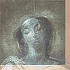

|
X-rays  The center image is a composite in which the X-ray image (at right) and the painting detail (at left) have been digitally combined to assist in interpretation of the X-radiograph. Although severe damage in the face renders some details difficult to read, it is apparent that originally the Virgin wore a veil– the outlines are visible across her brow and around her head.
Area
of the Crescent Moon The composite image (center) reveals the adjustments the artist made in the placement of the Virgin's feet, the red drapery at the right, and the hand of Saint Francis of Assisi.
More Than Meets
the Eye: X-rays of the Painting Reading an X-ray of a painting is similar to reading a medical X-ray. The densest areas of the subject absorb the most rays and show up as the lightest details on the film. Thus, human bones appear bright white. In a painting, the lightest areas tend to be those containing lead white, a very dense pigment.
|